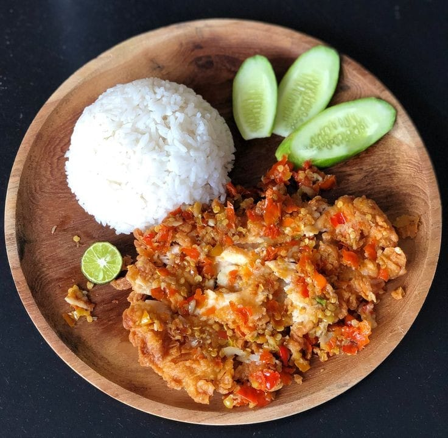

Ayam geprek adalah hidangan ayam goreng yang diulek bersama sambal. Rasanya pedas dan sangat populer di Indonesia.
Ikuti langkah-langkah berikut untuk membuat ayam geprek lezat di rumah:
gaperlu kata kata allah bersama kita
biasaaaa ajaaaaa
tidak butuh kata kata yang penting bukti nyata
belajarlah dari kegagalan karna kegagalan itu adalah pelajaran terbaik
tugas mulu, kita kan manusia bukan robot
© 2025 Ayam buatan alwiihh